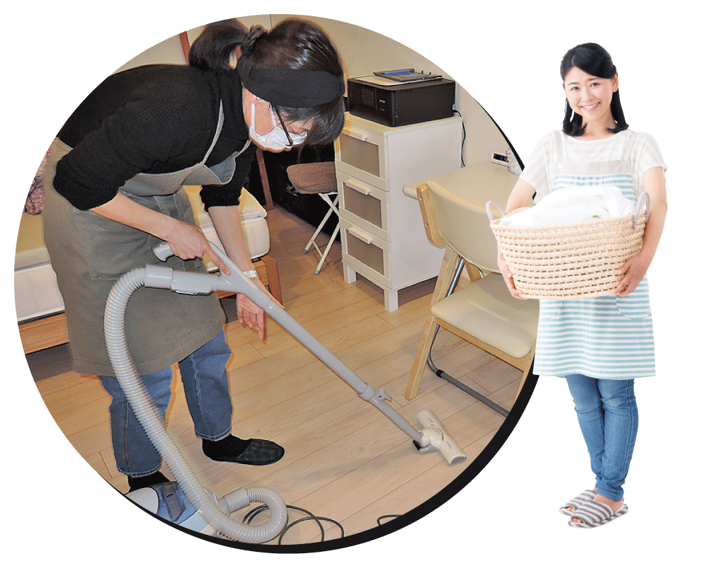
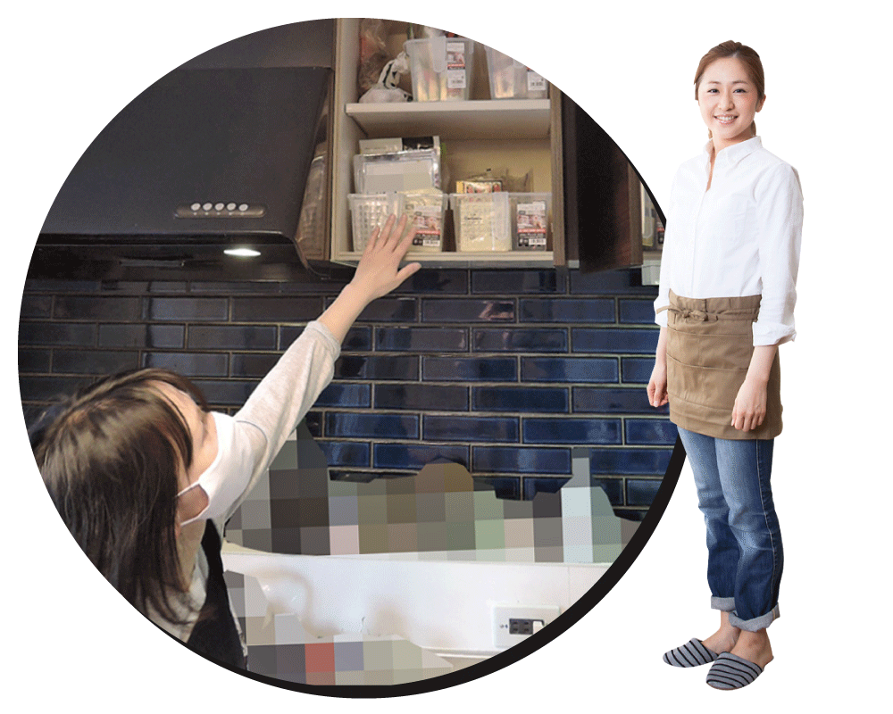

01
日常家事サポート
掃除・洗濯・片付けなど、暮らしに欠かせない家事を継続して支えます。
「こういう頼み方でもいいのかな？」という段階でも大丈夫です。
まずは相談する
01
掃除・洗濯・片付けなど、暮らしに欠かせない家事を継続して支えます。
02
買い物や料理、作り置きなど、食まわりの家事もサポートしています。日常家事とあわせてご利用いただくこともできます。

03
使いづらい・散らかりやすい場所を、今の暮らしに合わせて見直します。使いやすい状態が続くように、無理のない形で整えます。
01
その日の状況を見ながら優先順位を調整するため、毎回まったく同じ内容とは限りません。今、必要なことから進めます。
02
掃除や洗濯だけでなく、買い物や料理、整え直しまで対応しています。家の中で気になっていることも、まとめてご相談いただけます。
03
一度きりではなく、毎日の流れが止まらないことを大切にしています。内容や進め方は、今の暮らしに合う形を相談しながら決めていきます。
一律のサービスではなく、今の暮らし方に合わせて、使い方を調整しながら続けていく家事サポートです。あらかじめ細かな手順を決めておきたい方より、ある程度任せながら使いたい方に合うサービスです。
掃除、洗濯、片付けのほか、買い物や料理、作り置き、使いづらい場所の整え直しなどにも対応しています。内容は、今の暮らしに合わせてご相談いただけます。
毎回同じ形で固定することもできますが、その日の状況に合わせて優先順位を調整しながら進めることもできます。今の暮らしに合う使い方を、相談しながら決めていきます。
はい、大丈夫です。ご希望の内容や頻度、対応エリアなどを伺いながら、使い方のイメージをご案内します。